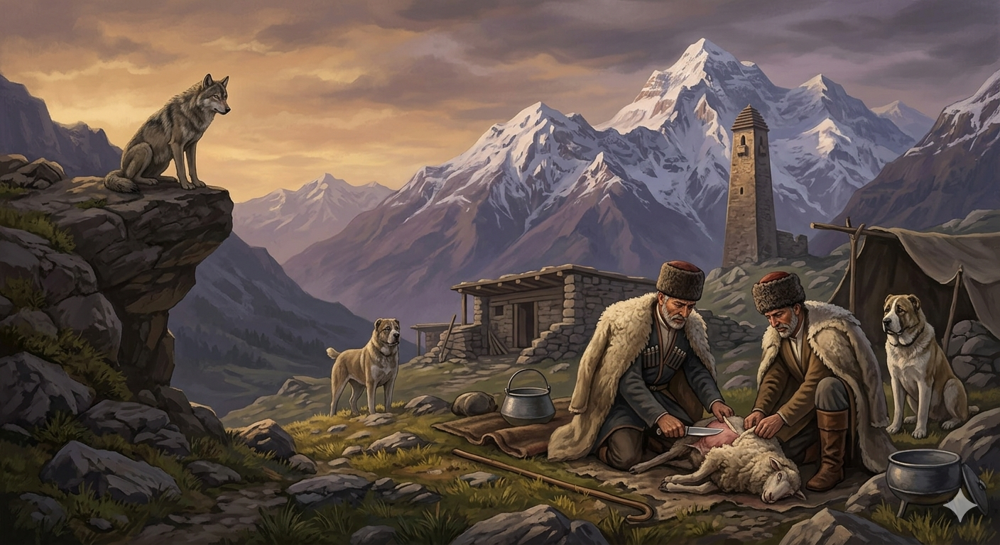

И.А. Дахкильгов. Хьехаме дувцарш - поучительные рассказы-притчи.
И.А. Дахкильгов. Хьехаме дувцарш - поучительные рассказы-притчи. Из ингушского фольклора.

Ховргдар-кха аз из даь даларе
УстагӀа туллабеш боахкаш хиннаб Ӏуй. Цар деш мел дар гаьннара зувш, уллаш хиннай бордз. ТӀеххьара аьннад цо: - Хьайла цу адамашка! Ма харца нах а ба! Бехке боаца, бага мотт боаца миска из устагӀа а бийна бахкаций! Ховргдар-кха аз из даьдаларе… Мел топаш етташ, мел жӀалеш тӀехьахехкаш, мел доккха оарц доаккхаргдар цар. Эхь дайна нах ба.
РУССКИЙ
Если бы это сделал я
Пастухи свежевали овцу. Издали за ними наблюдал волк. Наконец, он сказал: "Посмотрите на этих преступных людей. Зарезали мирную, слабую и бессловесную овечку. А если бы это сделал я… ох, как они начали бы шуметь, стрелять, напускать собак. Нет у них ни стыда ни совести".
ENGLISH
If I'd done that
The shepherds were slaughtering a sheep. A wolf watched them from a distance. Finally, he said: "Look at these wicked people. They've slaughtered a peaceful, weak and defenceless little sheep. But if I'd done that… oh, how they'd start making a racket, firing their guns and setting the dogs on me. They have neither shame nor conscience."
НОХЧИЙН
И ас динехь…
ЖаӀуша уьстагӀ хьалаьхьца хӀоттадеш хилла. Генна царна хьаьжна борз. ТӀаьхьа, цо аьлла: «Хьежа хӀокху зулам динчу нахах. УьстагӀ, машар долу, огӀда, мотт боцу верг йиина. Ткъа хӀара ас динехь… ох, муьлха гӀовгӀа лаьтта дар цара, топ хьекха, жӀаьлеш эккхабо. Эхь а, догӀ а дац царна».
ПОГОВОРКИ
Берзах кхерача даь жа хиннадац. Не было овец у того, кто боялся волка. One who feared the wolf never kept a flock. Барзах кхоьручу ден жа хилла дац.Берзо устагӀа думенгара болабу. Волк овцу начинает поедать с курдюка. The wolf begins eating the sheep from its fat tail. Барзо уьстагӀ думенгара бола бо.Дика даьчоа – дика шийна; во даьчоа – во шийна. Сделал добро – для себя, сделал зло – тоже для себя. Do good, and it's for yourself; do evil, and it's for yourself too. Дика динчо - дика шена; вон динчо - во шена.Дукха дийца бакъдар харцахьа даьннад. Правда, о которой твердят постоянно, становится кривдой. A truth repeated too many times turns into a lie. Дукха дийцина бакъдерг харцахьа даьлла.Жа Ӏул са дале, жа согахьа хьаллахка. Если я хозяин овечьего стада, то и овец гоните ко мне. If I am master of the flock, then drive the sheep to me. Жен Ӏуналла сан далахь, жа соьгахьа схьалахка.Жена юкъе ийккъача берзо устагӀа дика-во къестабац. Нагрянув в овчарню, волку некогда разбираться в овцах. A wolf that has burst into the flock has no time to pick and choose which sheep is which. Жена йуккъе иккхина барзо уьстагӀ дика-вон къестабац.Зудал яьнна лелачо нахах “зовдамаш” яхад. Потаскуха всех женщин называла “потаскухами” (блудницами). The promiscuous woman called all other women "promiscuous" too. Зудалла йаьлла лелачо нахах "заддарчий" баьхна.Кхайканза бена пхьу доттанза бахаб. Незванного пса отправили голодным. The uninvited dog was sent away hungry. Кхайкханза беъна пхьу доттанза дахна.Наьха боахам дагарбе Ӏохайнар лампа чура фаткен кхоачаденна висав. Севший считать чужое богатство не закончил счет, потому что в лампе керосин закончился. One who sat down to count another's wealth never finished, because the lamp ran out of kerosene. Нехан бахам багарбан охьахиънарг чиркх чуьра мехкадаьтта кхачаделла висна.Наьха ды йоргӀагӀа хет. Чужой конь кажется иноходцем. Someone else's horse always seems to have a better gait. Нехан дин йоргӀах хета.“Хьаде” ала аттагӀа да, хьадечул. Сказать “сделай” легче, чем сделать самому. It's easier to say "do it" than to do it yourself. "Схьаде" ала аттах ду, схьадечул.“Ӏаьхача, берзо був; ца Ӏаьхача, дас був”, - яхад устагӀо. Овца сказала: “Заблею, волк сожрет; не подам голоса, хозяин прирежет (считая, что заболела)”. The sheep said: "If I bleat, the wolf will eat me; if I stay silent, my master will slaughter me thinking I'm sick." "Ӏаьхча, барзо буь; ца Ӏаьхча, дас буь", - баьхна уьстагӀо.